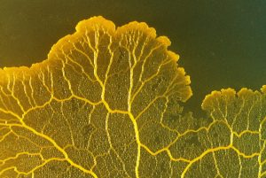

Physarum · caminhos que se reorganizam
Os tubos com mais fluxo engrossam; os menos usados vão desaparecendo.
Preparando…
Inspirado em Physarum polycephalum, um slime mold — não é um fungo. O amarelo toma como referência sua aparência na imagem indicada.
Este estudo começa com uma malha de tubos e mostra sua reorganização. Usa uma versão reduzida das regras de fluxo e reforço de Tero e colaboradores (2010), figura 4. O contorno e os pontos de alimento são próprios; não reproduzem o mapa de Tóquio. As curvas e a suavização temporal são escolhas de apresentação. Os 40 segundos não representam tempo biológico.
Reproduzir este estudo
Referência visual do artigo indicado

Imagem externa do blog da UBC, mantida aqui como referência de pesquisa local.